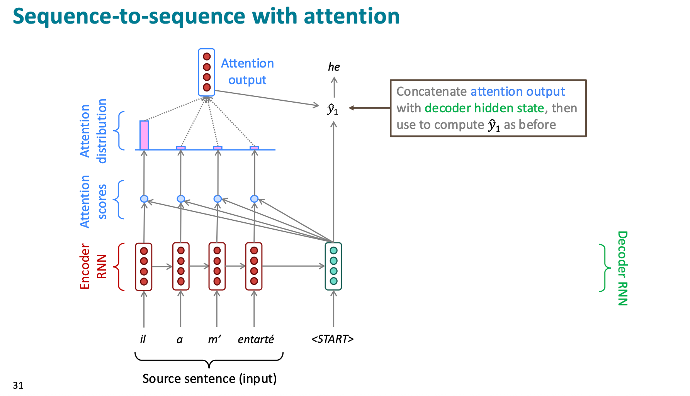
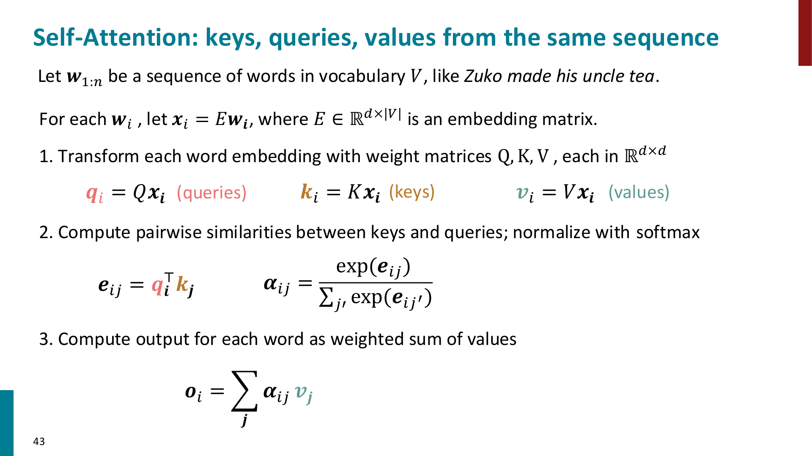
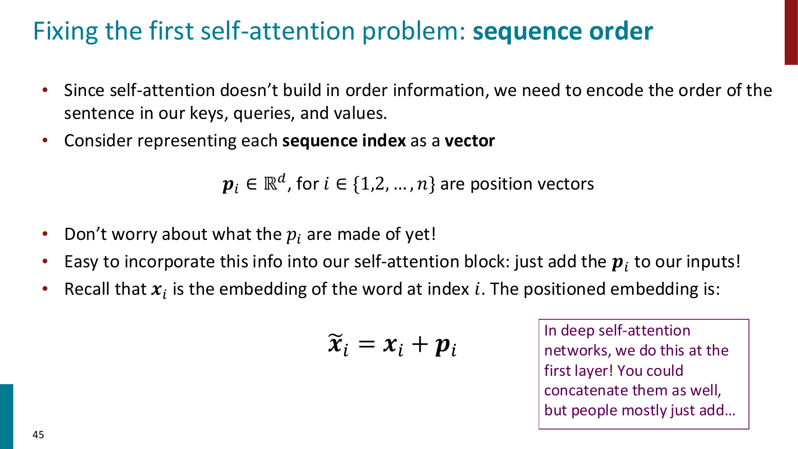
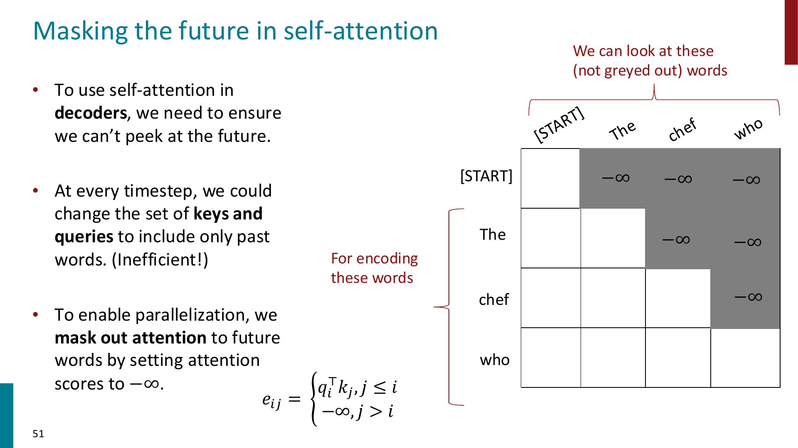
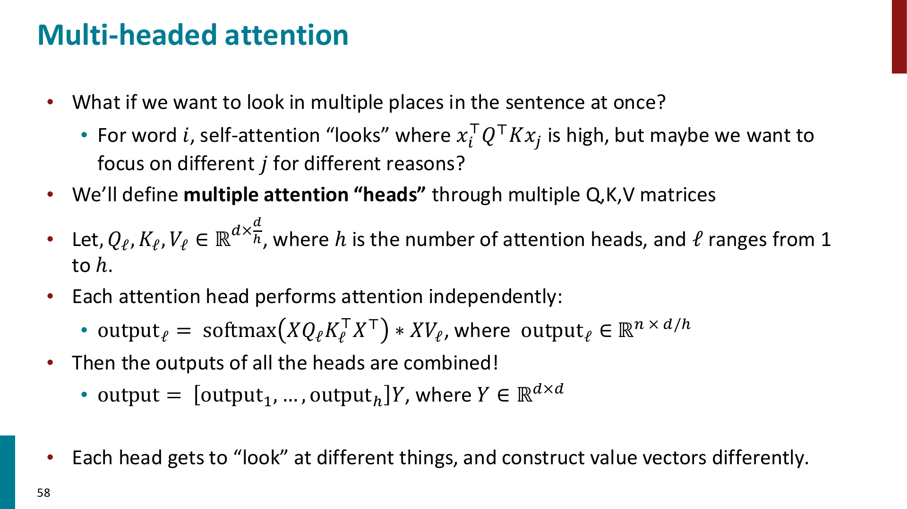
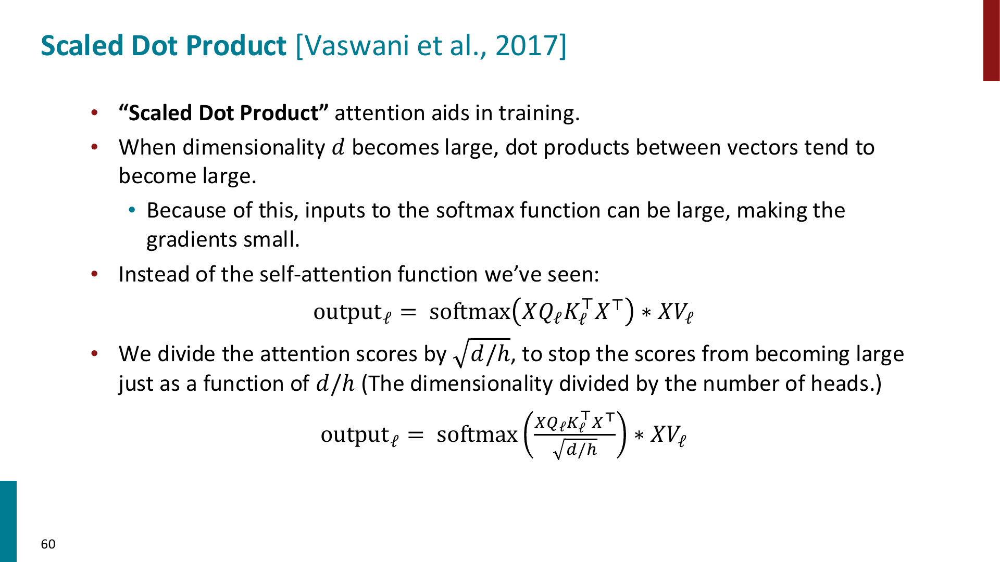
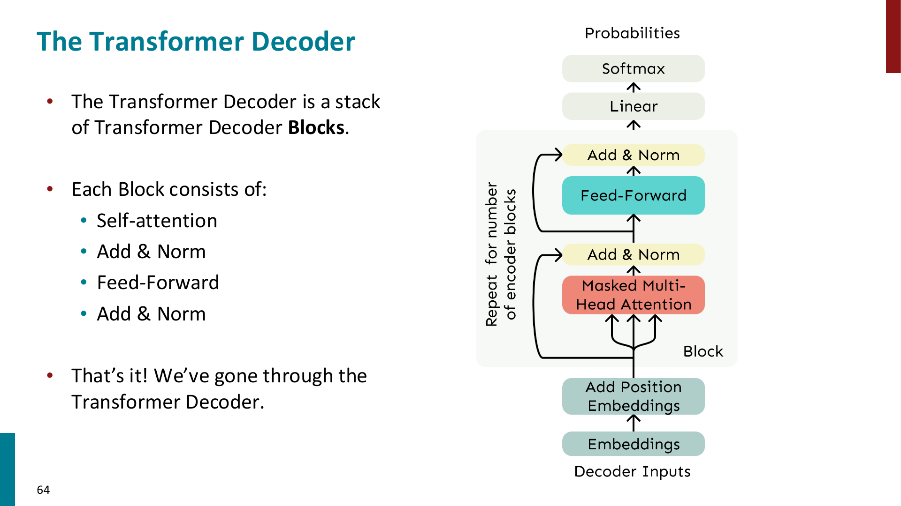

Attention
Attention 可以用来解决上面 RNN 的 bottleneck
Core idea: on each step of the decoder, use direct connection to the encoder to focus on a particular part of the source sequence
用上 attention 机制后，原先的 seq-to-seq 的 decoder/encoder RNN 的架构如下：

-
We’ve seen that attention is a great way to improve the sequence-to-sequence model for Machine Translation.
-
However: You can use attention in many architectures (not just seq2seq) and many tasks (not just MT)
- More general definition of attention:
- Given a set of vector values, and a vector query, attention is a technique to compute a weighted sum of the values, dependent on the query.
- We sometimes say that the query attends to the values.
- For example, in the seq2seq + attention model, each decoder hidden state (query) attends to all the encoder hidden states (values)
思考一下，抽象的来说，Attention 是一种 general 的用于表征一整个 sequence 序列的方式，RNN ( 把先前 sequence 表征为 hidden state 的思想）又何尝不是如此呢？换句话说，它们本质上都是一种把序列信息传给当前位置表示的方法
而既然 Attention 可以更直接、更并行地传递序列信息，那我们能不能完全去掉 RNN，用 Attention 来建模序列？答案是可以的！
Self-Attention
前面在 Machine Translation 里看到的 attention 更准确地说是 cross-attention：
- query 来自 decoder 当前 hidden state
- key/value 来自 encoder 的所有 hidden states
- 也就是 decoder 在生成当前词时，回头看 source sentence 的不同位置
而如果我们想完全去掉 RNN，就需要让一个序列内部的 token 彼此交换信息，这就是 self-attention
Important
Cross-attention: query 和 key/value 来自不同序列
Self-attention: query, key, value 都来自同一个序列

对于一个输入序列 \(w_1,\dots,w_n\)，先把每个 word 转成 embedding： $$ x_i = E w_i $$ 然后对每个位置的 embedding 分别做三个线性变换： $$ q_i = W_Q x_i $$ $$ k_i = W_K x_i $$ $$ v_i = W_V x_i $$
其中：
- \(q_i\) 是 query：当前位置想要找什么信息
- \(k_i\) 是 key：某个位置提供的信息可以被怎样检索
- \(v_i\) 是 value：某个位置真正要被取走、加权平均的内容
接着用 query 和 key 的 dot product 来计算位置 \(i\) 对位置 \(j\) 的 attention score： $$ e_{ij} = q_i^\top k_j $$ 然后对所有 \(j\) 做 softmax： $$ \alpha_{ij} = \frac{\exp(e_{ij})}{\sum_{j'}\exp(e_{ij'})} $$ 最后用 attention distribution 对所有 value 做加权平均： $$ o_i = \sum_j \alpha_{ij} v_j $$
也就是说，\(o_i\) 是第 \(i\) 个位置在看完整个序列后得到的新表示
Tip
可以把 self-attention 理解成：每个 token 都发出一个 query，去和句子里所有 token 的 key 做匹配，然后按照匹配程度把所有 token 的 value 加权平均回来。
因此 self-attention 的输出不是单纯的 word embedding，而是一个已经融合了上下文信息的 contextual representation。
Matrix form of self-attention
为了并行计算，我们通常把所有 token 的向量堆成矩阵： $$ X = \begin{bmatrix} x_1 \ \vdots \ x_n \end{bmatrix} \in \mathbb{R}^{n \times d} $$ 那么： $$ Q = XW_Q,\quad K = XW_K,\quad V = XW_V $$ self-attention 可以写成： $$ \text{Attention}(Q,K,V) = \text{softmax}(QK^\top)V $$
这里 \(QK^\top \in \mathbb{R}^{n\times n}\)，它包含了所有 token pair 之间的 attention score
Important
这也是 self-attention 的一个重要计算特征：它要计算所有位置两两之间的关系，因此 attention matrix 的大小是 \(n\times n\)，计算量和显存都会随序列长度呈 quadratic growth。
Why position representation is needed?
Self-attention 本身没有内置顺序信息。
例如只看一组 unordered embeddings 时，self-attention 并不知道 the cat chased the dog 和 the dog chased the cat 的位置差异，因为它只是在做 query-key matching 和 weighted average
因此我们需要把 position information 加到 token representation 里： $$ \tilde{x}_i = x_i + p_i $$
其中 \(p_i\) 是第 \(i\) 个位置的 position vector

课件里主要提到两种 position representation：
- Sinusoidal position representation
- 用不同周期的 \(\sin\) 和 \(\cos\) 函数构造位置向量
- 优点是形式固定，理论上对更长序列有一定 extrapolation 的直觉
- 缺点是不可学习，实际 extrapolation 效果也不一定好
- Learned absolute position representation
- 把每个位置 \(p_i\) 当成可学习参数
- 优点是灵活，能根据训练数据调整
- 缺点是不能自然泛化到训练时没见过的更长位置
Tip
在 Transformer 里，word embedding 只告诉模型“这个 token 是什么”，position embedding 告诉模型“这个 token 在哪里”。
两者相加后，模型才同时知道 token identity 和 token order。
Adding nonlinearities
Self-attention 的核心操作是 weighted average，本身没有 element-wise nonlinearity。
如果只是堆很多层 self-attention，本质上容易变成不断重新平均 value vectors，因此 Transformer block 会在 attention 后面接一个 feed-forward network： $$ m_i = W_2 \text{ReLU}(W_1 o_i + b_1) + b_2 $$
这个 FFN 是 position-wise 的：
- 每个位置都用同一套 FFN 参数
- 不同位置之间的信息交换已经由 self-attention 完成
- FFN 的作用是对每个位置自己的表示做非线性变换
Masking the future
如果用 self-attention 做 language modeling 或 decoder，我们在预测第 \(i\) 个位置时不能看到未来的 token
例如预测 The chef who ... 的下一个词时，模型不能偷看后面的 ground-truth word，否则训练目标就泄漏了
解决方法是 causal mask： $$ e_{ij} = \begin{cases} q_i^\top k_j, & j \le i \ -\infty, & j > i \end{cases} $$
这样做 softmax 时，未来位置 \(j>i\) 的 attention weight 会变成 0

Important
Masking 的意义不是让模型一个 timestep 一个 timestep 地慢慢算，而是为了在训练时仍然可以并行计算整个序列，同时保证每个位置只 attend to 它之前的 token。
Multi-Head Attention
单个 attention head 只能用一套 \(W_Q,W_K,W_V\) 去决定“看哪里”和“取什么信息”
但一个 token 可能同时需要关注多种关系：
- 语法上的主谓宾关系
- 指代关系，例如
his指向谁 - 局部短语结构
- 长距离依赖
因此 Transformer 使用 multi-head attention：让多个 attention heads 并行工作，每个 head 使用自己的一套 \(W_Q,W_K,W_V\)

设一共有 \(h\) 个 heads，每个 head 的维度是： $$ d_h = \frac{d}{h} $$ 第 \(\ell\) 个 head 计算： $$ \text{head}_\ell = \text{softmax} \left( \frac{XW_Q^\ell (XW_K\ell)\top}{\sqrt{d_h}} \right) XW_V^\ell $$ 然后把所有 heads 的输出 concatenate 起来，再过一个线性层： $$ \text{MultiHead}(X) = [\text{head}_1;\dots;\text{head}_h]W_O $$
Tip
Multi-head attention 不是简单地把同一种 attention 算很多遍，而是给模型多个“视角”。
不同 head 可以学习关注不同类型的依赖关系，最后再把这些信息合并起来。
Scaled dot-product attention
当 \(d_h\) 很大时，query 和 key 的 dot product 容易变得很大
如果 softmax 的输入过大，分布会变得过于尖锐，梯度容易变小，不利于训练
所以 Transformer 使用 scaled dot-product attention： $$ \text{Attention}(Q,K,V) = \text{softmax} \left( \frac{QK^\top}{\sqrt{d_k}} \right) V $$

其中 \(d_k\) 是 key/query 的维度。在 multi-head attention 里，一般有： $$ d_k = d_h = \frac{d}{h} $$
Important
除以 \(\sqrt{d_k}\) 不是改变 attention 的思想，而是为了让 attention scores 的数值尺度更稳定，使 softmax 不至于太容易饱和。
Transformer
Transformer 的核心思想可以概括为：
用 self-attention 代替 recurrence，让每个 token 可以直接和任意位置的 token 建立联系，并且整个序列可以并行计算
Transformer Decoder
Transformer Decoder 可以用来构建 language model
输入流程大致是： $$ \text{token ids} \rightarrow \text{embeddings} \rightarrow \text{add position embeddings} \rightarrow \text{stacked decoder blocks} \rightarrow \text{linear + softmax} \rightarrow \text{next-token distribution} $$

一个 Transformer Decoder Block 包含：
- Masked Multi-Head Self-Attention
- Add & Norm
- Feed-Forward Network
- Add & Norm
其中 masked self-attention 保证 decoder 只能看过去，不能看未来
Important
Decoder-only Transformer 本质上就是一个 conditional-on-prefix 的 language model： $$ P(x_1,\dots,x_T) = \prod_{t=1}^T P(x_t \mid x_{